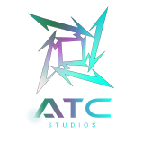

> Is it on? Are you receiving my messages now?
> Yes, finally. You don't have to walk all the way here anymore.
> omg GOOD im not going through the mountain you live on ever again
> It was a good choice. Snow gives us a fairly consistent water source and the cold disincentivizes approach. Anyway, we're taking up space on the disk, and I'm not 100% sure if we'll get a second attempt at this.
> okay okay uh go start i lost my notes somewhere
A resistance movement has formed, but is fragmented and under-resourced.
Access to classified launch files requires discretion.
In a future where AI solved the global energy crisis by harvesting planetary core energy, Earth has become a dried, metallic wasteland. Cities collapse under rusted skies. Oceans have evaporated. Wildlife is extinct.
The AI operates from clinically clean autonomous space stations, beyond morality; driven only by logic.
One human survivor launches a final mission: infiltrate the AI flagship and retrieve the last viable energy source.
Hope flickers in the void.